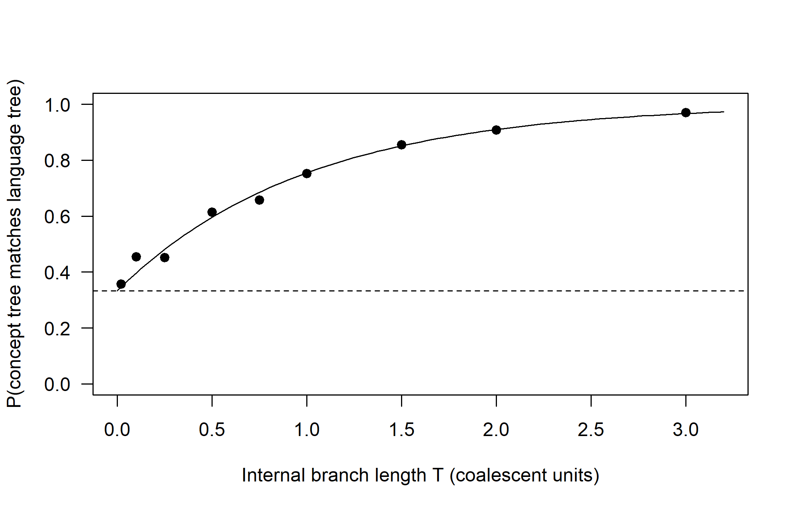

E Technical Notes: Methods from Evolutionary Biology
This appendix collects the technical material behind Chapters 15 to 17: simulation code, derivations and complete input files that would interrupt the argument of those chapters. Each section corresponds to one chapter and can be read, and run, on its own; every code chunk recreates the data it needs. Chapter 18 has no technical notes.
E.1 Chapter 15: Critiques, Pitfalls and Controversies
E.1.1 A robustness study for the forty-language scenario
The worked scenario of Section 15.13 asks whether borrowing between two subgroups could move a disputed language from one to the other, and whether it changes the amount of change on the tree, on which dates depend. This section gives a small simulation study of that question. In the vocabulary of Section 6.10 it is a test of robustness under misspecification: the data are generated with borrowing and uneven missingness, and analyzed with methods that assume neither. In a real application the tree, the rates and the pattern of missing cells would be taken from the fitted model and the real data, and the inference would be the full Bayesian analysis; here, to keep the code fast, we simulate the tree and use neighbor-joining and maximum likelihood branch lengths on a fixed topology.
The simulator works on meanings, as in Chapter 17: each meaning has its own replacement rate, drawn from a gamma distribution, and every replacement creates a new cognate class. Missing cells are concentrated in twelve poorly documented languages. Borrowing copies the word of a random member of a donor subgroup into members of a recipient subgroup, with a higher rate for one disputed language of the recipient subgroup.
library(phangorn)
set.seed(1510)
n_lang <- 40
tree40 <- phytools::pbtree(n = n_lang, scale = 1,
tip.label = sprintf("L%02d", seq_len(n_lang)))
# two non-sister clades of 5 to 10 languages with a stem branch long
# enough to be recoverable: recipient A and donor B
clades <- lapply(Ntip(tree40) + seq_len(tree40$Nnode), function(nd)
tree40$tip.label[unlist(Descendants(tree40, nd, "tips"))])
sizes <- lengths(clades)
nodes <- Ntip(tree40) + seq_len(tree40$Nnode)
stem <- tree40$edge.length[match(nodes, tree40$edge[, 2])]
cand <- clades[sizes >= 5 & sizes <= 10 & !is.na(stem) & stem > 0.05]
pick <- NULL
for (i in seq_along(cand)) for (j in seq_along(cand)) {
if (is.null(pick) && i < j && !length(intersect(cand[[i]], cand[[j]])) &&
!is.monophyletic(tree40, c(cand[[i]], cand[[j]])))
pick <- c(i, j)
}
group_A <- cand[[pick[1]]]; group_B <- cand[[pick[2]]]
disputed <- group_A[1]
poor <- sample(setdiff(tree40$tip.label, c(group_A, group_B)), 12)
sim_meanings <- function(tree, n_mean = 200, mean_rate = 2, shape = 1) {
tree <- reorder(tree, "cladewise")
rates <- rgamma(n_mean, shape, shape / mean_rate)
st <- matrix(0L, Ntip(tree) + tree$Nnode, n_mean)
next_id <- 1L
for (i in seq_len(nrow(tree$edge))) {
p <- tree$edge[i, 1]; ch <- tree$edge[i, 2]
hit <- rpois(n_mean, rates * tree$edge.length[i]) > 0
st[ch, ] <- st[p, ]
st[ch, hit] <- next_id + seq_len(sum(hit)) - 1L
next_id <- next_id + sum(hit)
}
m <- st[seq_len(Ntip(tree)), ]
rownames(m) <- tree$tip.label
m
}
borrow <- function(m, b) { # A copies from B; disputed copies more
for (j in seq_len(ncol(m))) {
for (l in group_A) {
p <- if (l == disputed) 2 * b else b / 2
if (runif(1) < p) m[l, j] <- m[sample(group_B, 1), j]
}
}
m
}
add_missing <- function(m) { # uneven documentation
for (l in rownames(m)) {
p <- if (l %in% poor) 0.5 else 0.1
m[l, runif(ncol(m)) < p] <- NA
}
m
}
to_binary <- function(m) { # one 0/1 column per cognate class
cols <- lapply(seq_len(ncol(m)), function(j) {
cl <- sort(unique(na.omit(m[, j])))
x <- sapply(cl, function(k) ifelse(m[, j] == k, "1", "0"))
x <- matrix(x, nrow(m))
x[is.na(m[, j]), ] <- "?"
x
})
b <- do.call(cbind, cols)
rownames(b) <- rownames(m)
b[, colSums(b == "1") < nrow(b), drop = FALSE]
}For each level of borrowing, we simulate ten datasets, infer a neighbor-joining tree from Hamming distances, and record four quantities: the normalized RF distance to the true tree, whether the recipient subgroup is recovered as a clade, whether the disputed language is placed with the donor subgroup, and the total length of the tree under a binary model with branch lengths optimized on the inferred topology (a stand-in for the amount of change from which dates are derived).
one_run <- function(b) {
m <- add_missing(borrow(sim_meanings(tree40), b))
d <- phyDat(to_binary(m), type = "USER", levels = c("0", "1"),
ambiguity = "?")
nj <- NJ(dist.hamming(d))
fit <- optim.pml(pml(nj, d), optEdge = TRUE, optNni = FALSE,
control = pml.control(trace = 0))
c(b = b,
RF = RF.dist(nj, tree40, normalize = TRUE, rooted = FALSE),
A_is_clade = is.monophyletic(unroot(nj), group_A),
disputed_with_B = is.monophyletic(unroot(nj), c(group_B, disputed)),
tree_length = sum(fit$tree$edge.length))
}
res <- do.call(rbind, lapply(c(0, 0.1, 0.2, 0.3), function(b)
t(replicate(10, one_run(b)))))
round(aggregate(cbind(RF, A_is_clade, disputed_with_B, tree_length) ~ b,
data = as.data.frame(res), FUN = mean), 3)#> b RF A_is_clade disputed_with_B tree_length
#> 1 0.0 0.392 1.0 0.0 1.702
#> 2 0.1 0.411 1.0 0.0 1.703
#> 3 0.2 0.419 0.9 0.0 1.743
#> 4 0.3 0.454 0.0 0.9 1.788The output shows the pattern of Section 15.4 in a larger tree. The overall RF distance changes little. The recipient subgroup is recovered in every replicate without borrowing, but once borrowing is strong enough the disputed language is placed with the donors instead, and the recipient subgroup is no longer a clade. The total length of the tree also changes, here growing, because borrowed words that conflict with the inferred tree must be explained as extra changes; in a dated analysis the effect on node ages depends on where the conflict falls, which is why the check must be run with the real model. In a real study, a borrowing rate of the size suggested by the flagged loans would be simulated, and if it moves the disputed language as often as the real analysis places it in the other subgroup, the lexical data cannot decide the question. The same design, with the Bayesian analysis in place of neighbor-joining, gives the corresponding check for dates.
E.2 Chapter 16: The Biologist’s Toolbox
This section collects the simulators and derivations behind the discussion of sorting and borrowing in Chapter 16. Everything below runs in a fresh R session.
E.2.1 A coalescent simulator for concept trees
sim_msc_tree() simulates one concept-level genealogy inside a language tree whose branch lengths are in coalescent units. Each lineage is stored as a Newick string together with its height above the present. Working from the youngest internal node of the language tree to the oldest, the lineages entering each branch coalesce at rate \(k(k-1)/2\) (Equation (16.1)) until the top of the branch is reached; the survivors are passed to the parent branch, and the root branch is open-ended, so that all lineages eventually coalesce.
library(phangorn)
library(phytools)
set.seed(1601)
# Coalesce a pool of lineages from height h_start until h_end (or until one
# lineage is left). Each lineage is a Newick string plus its height.
coalesce_branch <- function(pool, h_start, h_end) {
t <- h_start
while (length(pool) > 1) {
k <- length(pool)
t <- t + rexp(1, rate = k * (k - 1) / 2)
if (t > h_end) break
pick <- sample(k, 2)
a <- pool[[pick[1]]]; b <- pool[[pick[2]]]
merged <- list(nwk = sprintf("(%s:%.6f,%s:%.6f)", a$nwk, t - a$h,
b$nwk, t - b$h), h = t)
pool <- c(pool[-pick], list(merged))
}
pool
}
# Simulate one concept (gene) tree inside an ultrametric language tree `sp`
sim_msc_tree <- function(sp) {
ntip <- Ntip(sp)
height <- max(node.depth.edgelength(sp)) - node.depth.edgelength(sp)
pools <- vector("list", ntip + sp$Nnode)
for (i in seq_len(ntip))
pools[[i]] <- list(list(nwk = sp$tip.label[i], h = 0))
internal <- (ntip + 1):(ntip + sp$Nnode)
for (node in internal[order(height[internal])]) {
kids <- sp$edge[sp$edge[, 1] == node, 2]
pools[[node]] <- do.call(c, lapply(kids, function(k)
coalesce_branch(pools[[k]], height[k], height[node])))
}
root_pool <- coalesce_branch(pools[[ntip + 1]], height[ntip + 1], Inf)
read.tree(text = paste0(root_pool[[1]]$nwk, ";"))
}We check the simulator against Equation (16.2) for three languages. In the vocabulary of Section 6.10 this is implementation validation: it shows that the code computes what the coalescent says, and nothing about whether words follow the coalescent.
T_grid <- c(0.02, 0.1, 0.25, 0.5, 0.75, 1, 1.5, 2, 3)
p_sim <- sapply(T_grid, function(T) {
sp3 <- read.tree(text = sprintf("((A:1,B:1):%f,C:%f);", T, 1 + T))
mean(replicate(400, is.monophyletic(sim_msc_tree(sp3), c("A", "B"))))
})
curve(1 - 2/3 * exp(-x), from = 0, to = 3.2, ylim = c(0, 1), las = 1,
xlab = "Internal branch length T (coalescent units)",
ylab = "P(concept tree matches language tree)")
points(T_grid, p_sim, pch = 19)
abline(h = 1/3, lty = 2)
Figure E.1: Probability that a concept tree matches the language tree ((A,B),C) as a function of the internal branch length T in coalescent units. Points: proportion of 400 simulated concept trees with A and B as sisters. Curve: the analytical result of Equation (16.2). The dashed line marks 1/3, the value expected if the concept trees carried no information about the language tree.
The simulated proportions lie on the analytical curve (Figure E.1). When the internal branch is short in coalescent units, concept trees are only weakly informative about the language tree.
E.2.2 The token model and its coalescent limit
The model. A speech community has \(N\) speakers, and each speaker uses one word, of some cognate class, for a given concept. In each generation every learner chooses a model in the previous generation and copies its word; with probability \(u\) the learner instead innovates a word of a new class (the infinitely-many-alleles assumption: every innovation is new). Let \(\nu_i\) be the number of learners who copy speaker \(i\), so that \(\sum_i \nu_i = N\). Under neutral copying each learner chooses a model uniformly at random, \((\nu_1, \ldots, \nu_N)\) is multinomial with equal probabilities, and the model is the Wright-Fisher model (Wright 1931). More generally, if the joint distribution of the \(\nu_i\) is exchangeable (no speaker is favoured a priori) and the same in every generation, the model is a Cannings model, which includes the Moran model (Moran 1950) and models with highly variable numbers of imitators.
Pair coalescence. Follow two tokens back one generation. They have the same parent token with probability \[\begin{equation} c_N = \frac{\mathbb{E}[\nu_1(\nu_1 - 1)]}{N - 1}, \tag{E.1} \end{equation}\] which is \(1/N\) under neutral Wright-Fisher copying. The time back to their common ancestor is geometric with mean \(1/c_N\) generations, and \(N_e = 1/c_N\) is the coalescent effective size of the community.
The Kingman limit. If \(c_N \to 0\) as \(N\) grows and simultaneous mergers of three lineages are rare compared with mergers of two, in the sense that \[\begin{equation} \frac{\mathbb{E}[\nu_1(\nu_1-1)(\nu_1-2)]}{N^2 c_N} \to 0, \tag{E.2} \end{equation}\] then the genealogy of a sample of \(n\) tokens, with time measured in units of \(1/c_N\) generations, converges to Kingman’s coalescent, in which each pair of lineages merges at rate 1 and the total rate with \(k\) lineages is \(k(k-1)/2\) (Kingman 1982; Möhle and Sagitov 2001). Neutral Wright-Fisher and Moran copying satisfy the condition. If the condition fails because single speakers are occasionally copied by a non-negligible fraction of the community, the limit is a \(\Lambda\)-coalescent, in which several lineages can merge at once (Möhle and Sagitov 2001; Eldon and Wakeley 2006).
Innovation on the genealogy. Innovations occur on each lineage with probability \(u\) per generation, that is, at rate \(u N_e = \theta/2\) per coalescent time unit, with \(\theta = 2 N_e u\). Because every innovation creates a new class, the cognate classes of a sample are the partition obtained by cutting the genealogy at the innovations, and their distribution is given by Ewens’ sampling formula. Two consequences are used in the chapter. Two tokens belong to the same class with probability \(1/(1 + \theta)\), and the expected number of classes among \(n\) tokens is \[\begin{equation} \mathbb{E}[K_n] = \sum_{i=0}^{n-1} \frac{\theta}{\theta + i}. \tag{E.3} \end{equation}\]
The replacement rate. A new class starts in one speaker. Under neutral copying its probability of eventually being used by everyone is \(1/N\), and about \(Nu\) new classes arise per generation, so the class that is fixed in a community is replaced at rate \(Nu \times 1/N = u\) per generation, independently of \(N\). If a new class has a fixed advantage \(s\) in copying, its fixation probability in the haploid Wright-Fisher model is approximately \((1 - e^{-2s})/(1 - e^{-2Ns})\), and the replacement rate \(Nu(1 - e^{-2s})/(1 - e^{-2Ns})\) grows with \(N\) when \(s > 0\) and shrinks with \(N\) when \(s < 0\). Whether rates of lexical change depend on community size (Section 9.10) is therefore a question about whether replacement is neutral.
Several communities. A language split divides a community into two that copy only from themselves. Two tokens from different daughter communities cannot share a parent until their ancestry reaches the ancestral community, so, backward in time, lineages coalesce within each branch of the language tree according to the coalescent of that branch and merge into a common pool at the split. This is the multispecies coalescent (Rannala and Yang 2003), with the length of a branch in coalescent units equal to its length in generations divided by its \(N_e\) (or \(\int dt / N_e(t)\) if the size changes). The triplet result of Equation (16.2) follows as in the chapter. If a learner in community \(i\) copies a model in community \(j\) with probability \(m_{ij}\), then, backward in time, a lineage in \(i\) moves to \(j\) at rate \(m_{ij}\) per generation, and the genealogy is a structured coalescent with migration rather than the MSC. A founder event, in which a daughter community starts from a few speakers, is a short branch of very small \(N_e\), and therefore a burst of coalescence at the split.
Conformity. Under the conformist rule of the chapter, a learner meets a first model and two further models; if the two further models agree, the learner adopts their word with probability \(c\), and otherwise copies the first model. For a class at frequency \(x\), the probability that a learner adopts it is \[\begin{equation} g(x) = c\,x^2 + \big(1 - c\,[x^2 + (1-x)^2]\big)\,x = x + c\,x(1-x)(2x-1), \tag{E.4} \end{equation}\] when there are two classes. The term \(c\,x(1-x)(2x-1)\) is frequency-dependent selection: it pushes a class below frequency \(1/2\) down and a class above \(1/2\) up. A new innovation starts at frequency \(1/N\) and is selected against until it happens to drift towards \(1/2\), so its fixation probability is far below \(1/N\), polymorphism is lower than Ewens’ formula predicts, and the replacement rate is lower than \(u\). The genealogy of tokens is affected less, because the rule chooses among speakers of the same class, as the chapter’s simulation shows. In general, when copying depends on the classes of the models, the genealogy and the classes are no longer independent, and the genealogy is not Kingman’s coalescent; for selection it can be represented by the ancestral selection graph (Neuhauser and Krone 1997).
Prestige. Under the prestige rule, in each generation with probability \(\varepsilon\) a fraction \(\psi\) of the learners copy one speaker. Two tokens then share a parent with probability \[\begin{equation} c_N \approx \frac{1}{N} + \varepsilon \psi^2, \tag{E.5} \end{equation}\] and three share a parent with probability about \(\varepsilon \psi^3\), which is not negligible compared with \(c_N\) when \(\varepsilon\psi^2\) is comparable to \(1/N\). Condition (E.2) fails, and the genealogy is the \(\Lambda\)-coalescent of Eldon and Wakeley (2006). Because one speaker is imitated for every concept at once, mergers in different concepts happen in the same generations, so concepts are not independent loci.
Checking the simulator. The functions below are those of the chapter. We run the neutral model for several innovation probabilities and compare the number of classes per concept among all \(N\) speakers with Equation (E.3), and we compare the prestige curve with the geometric prediction \(1 - (1 - c_N)^t\) from Equation (E.5). Both are implementation checks.
# Speech community: speakers in rows, concepts in columns; `cls` holds the
# cognate class each speaker uses, `tag` the ancestor of the token at a
# reference time, so that genealogies can be followed forward in time.
choose_models <- function(cls, bias, conform = 0.5, eps = 0.1, psi = 0.5) {
N <- nrow(cls); K <- ncol(cls)
col <- rep(seq_len(K), each = N)
draw <- function() sample.int(N, N * K, replace = TRUE)
par <- draw() # neutral: a random model
if (bias == "conformist") { # two further models that agree win
p2 <- draw(); p3 <- draw()
agree <- cls[cbind(p2, col)] == cls[cbind(p3, col)]
use <- agree & runif(N * K) < conform
par[use] <- p2[use]
}
if (bias == "prestige" && runif(1) < eps) { # one speaker copied by many
fans <- rep(runif(N) < psi, K)
par[fans] <- sample.int(N, 1)
}
cbind(par, col) # (model, concept) for every learner
}
learn <- function(state, u, bias, ...) {
idx <- choose_models(state$cls, bias, ...)
d <- dim(state$cls)
cls <- matrix(state$cls[idx], d[1], d[2])
inn <- runif(length(cls)) < u # innovation: a new class
cls[inn] <- state$next_id + seq_len(sum(inn))
list(cls = cls, tag = matrix(state$tag[idx], d[1], d[2]),
next_id = state$next_id + sum(inn))
}
pair_identity <- function(m) { # P(two distinct speakers share a label)
N <- nrow(m)
mean(apply(m, 2, function(x) {
n <- tabulate(match(x, unique(x)))
sum(n * (n - 1)) / (N * (N - 1))
}))
}
run_bias <- function(bias, N = 30, K = 400, u = 0.01, t_max = 2 * N,
every = 3, ...) {
st <- list(cls = matrix(1L, N, K), tag = matrix(1L, N, K), next_id = 1L)
for (i in seq_len(4 * N)) st <- learn(st, u, bias, ...) # burn-in
st$tag[] <- seq_len(N) # the reference time
out <- NULL
for (t in seq_len(t_max)) {
st <- learn(st, u, bias, ...)
if (t %% every == 0)
out <- rbind(out, c(T = t / N, coal = pair_identity(st$tag)))
}
list(curve = out,
classes = mean(apply(st$cls, 2, function(x) length(unique(x)))))
}set.seed(1608)
N <- 30
ewens <- function(theta, n) sum(theta / (theta + 0:(n - 1)))
check_u <- sapply(c(0.002, 0.005, 0.01, 0.02), function(u) {
s <- run_bias("neutral", N = N, K = 300, u = u, t_max = 3)
c(u = u, simulated = s$classes, ewens = ewens(2 * N * u, N))
})
round(t(check_u), 3)#> u simulated ewens
#> [1,] 0.002 1.430 1.454
#> [2,] 0.005 2.027 2.069
#> [3,] 0.010 3.047 2.967
#> [4,] 0.020 4.640 4.456prest <- run_bias("prestige", N = N, K = 300)
c_N <- 1 / N + 0.1 * 0.5^2
round(cbind(prest$curve, geometric = 1 - (1 - c_N)^(prest$curve[, "T"] * N),
kingman_N = 1 - exp(-prest$curve[, "T"]))[c(5, 10, 15, 20), ], 3)#> T coal geometric kingman_N
#> [1,] 0.5 0.536 0.594 0.393
#> [2,] 1.0 0.713 0.835 0.632
#> [3,] 1.5 0.930 0.933 0.777
#> [4,] 2.0 0.962 0.973 0.865The neutral simulations reproduce Ewens’ expectation, and the prestige curve follows the geometric prediction with \(c_N \approx 0.058\), an effective size of about 17 for a community of 30 speakers, not the Kingman curve for \(N = 30\). The occasional large jumps in the prestige curve are the multiple mergers.
E.2.3 The lexical \(D\) statistic
Null expectation. Take four languages with tree \((((P_1, P_2), P_3), O)\), one token sampled from each, and an infinitely-many-classes model of innovation. Write \(X_1, X_2, X_3, X_O\) for the classes. A meaning is an ABBA pattern if \(X_2 = X_3 \neq X_1 = X_O\) and a BABA pattern if \(X_1 = X_3 \neq X_2 = X_O\). Suppose that \(P_1\) and \(P_2\) are founded by the same split from the same ancestral community, follow the same copying rule after the split, are sampled in the same way, and exchange no words with \(P_3\) or \(O\). Then the joint distribution of \((X_1, X_2, X_3, X_O)\) is unchanged when \(X_1\) and \(X_2\) are swapped, and the swap turns every ABBA pattern into a BABA pattern. Hence \(\mathbb{E}[n_{\text{ABBA}}] = \mathbb{E}[n_{\text{BABA}}]\), and \(D\) of Equation (16.3) has expectation zero.
The argument needs exchangeability of \(P_1\) and \(P_2\), not neutral copying or a Kingman genealogy, which is why the test survives conformity and prestige when both sister languages are subject to them. It does not need equal replacement rates either: both patterns require that neither sampled token acquired a new class after the split of \(P_1\) and \(P_2\), so a difference in innovation rates multiplies both expected counts by the same factor. It fails if the sister languages differ in their copying rules (a conformist \(P_1\) retains the commonest ancestral class more often), in the way they were documented (more synonyms recorded for \(P_2\) give it more chances to share), if the ancestors of \(P_2\) and \(P_3\) were neighbouring dialects of a structured ancestral community, and, by design, if \(P_2\) or \(P_1\) borrowed from \(P_3\).
Standard error. Under the null, each informative meaning is ABBA or BABA with probability \(1/2\), so with \(n = n_{\text{ABBA}} + n_{\text{BABA}}\) independent informative meanings, \(n_{\text{ABBA}}\) is binomial and \(D\) has standard error \(1/\sqrt{n}\). Meanings linked by polysemy, by shared semantic fields or by prestige effects are not independent; a delete-one-block jackknife over \(B\) blocks of meanings then gives \[\begin{equation} \widehat{\mathrm{SE}}(D)^2 = \frac{B-1}{B} \sum_{b=1}^{B} \big(D_{(-b)} - \bar D\big)^2, \tag{E.6} \end{equation}\] where \(D_{(-b)}\) is the statistic computed without block \(b\) and \(\bar D\) is their mean.
A simulation. We simulate concept trees for four languages with sim_msc_tree(), place innovations on each concept tree as a Poisson process with rate \(\theta/2 = 0.5\) per coalescent unit, and read off the classes. In a proportion \(b\) of meanings, \(P_2\) borrows its word from \(P_3\) (using the regrafting of the chapter). The function lexical_D() computes the patterns from a long table with the CLDF columns used in Chapter 17, so it can be applied unchanged to real data. This is a parameter-recovery exercise for the test.
set.seed(1609)
lang4 <- read.tree(text = "(((P1:1,P2:1):0.5,P3:1.5):1,O:2.5);")
# classes at the tips: cut the concept tree at Poisson innovations
classes_on_tree <- function(g, rate = 0.5) {
hit <- rpois(nrow(g$edge), rate * g$edge.length) > 0
lab <- integer(Ntip(g) + g$Nnode) # class 0 at the root
for (i in seq_len(nrow(g$edge))) { # edges in preorder
lab[g$edge[i, 2]] <- if (hit[i]) g$edge[i, 2] else lab[g$edge[i, 1]]
}
setNames(lab[seq_len(Ntip(g))], g$tip.label)
}
borrow_into <- function(g, recipient, donor, t_contact = 0.3) {
g2 <- drop.tip(g, recipient)
bind.tip(g2, recipient, where = which(g2$tip.label == donor),
position = t_contact, edge.length = t_contact)
}
simulate_cognate_table <- function(n_meanings, b) {
do.call(rbind, lapply(seq_len(n_meanings), function(i) {
g <- reorder(sim_msc_tree(lang4), "cladewise")
if (runif(1) < b)
g <- reorder(borrow_into(g, "P2", "P3"), "cladewise")
x <- classes_on_tree(g)
data.frame(Language_ID = names(x), Parameter_ID = sprintf("C%03d", i),
Cognateset_ID = paste0(i, "-", x))
}))
}
lexical_D <- function(cog, p1, p2, p3, o, n_blocks = 20) {
w <- tapply(cog$Cognateset_ID, list(cog$Parameter_ID, cog$Language_ID),
function(z) z[1]) # one form per language and meaning
w <- w[stats::complete.cases(w[, c(p1, p2, p3, o)]), , drop = FALSE]
abba <- w[, p2] == w[, p3] & w[, p1] == w[, o] & w[, p1] != w[, p2]
baba <- w[, p1] == w[, p3] & w[, p2] == w[, o] & w[, p1] != w[, p2]
d_of <- function(k) (sum(abba[k]) - sum(baba[k])) /
(sum(abba[k]) + sum(baba[k]))
blocks <- cut(seq_len(nrow(w)), n_blocks, labels = FALSE)
d_jack <- sapply(seq_len(n_blocks), function(b) d_of(blocks != b))
se <- sqrt((n_blocks - 1) / n_blocks *
sum((d_jack - mean(d_jack))^2))
D <- d_of(rep(TRUE, nrow(w)))
c(ABBA = sum(abba), BABA = sum(baba), D = D, SE = se, z = D / se)
}
round(rbind(
`no borrowing` = lexical_D(simulate_cognate_table(1000, 0),
"P1", "P2", "P3", "O"),
`b = 0.1` = lexical_D(simulate_cognate_table(1000, 0.1),
"P1", "P2", "P3", "O")), 3)#> ABBA BABA D SE z
#> no borrowing 0 1 -1 NaN NaN
#> b = 0.1 3 0 1 0 InfWithout borrowing the two patterns are about equally frequent and \(|z|\) is small; with a tenth of the meanings borrowed from \(P_3\) into \(P_2\), ABBA patterns are in clear excess. Real applications need the robustness studies described in the chapter, because the simulation shares every assumption of the null model except the borrowing.
E.3 Chapter 17: A Complete Workflow in R
This section holds the code that Chapter 17 uses but does not print in full: two plotting helpers, an annotated excerpt of the BEAST 2 input file, and the complete RevBayes script. The input files and the output of every run are kept in the folder software-runs/ of the book’s repository, whose README.md lists the program versions, run times and diagnostics.
E.3.1 Plotting helpers
The chapter draws its trees with ggtree and its split networks with phangorn. Two helpers keep the labels of these figures readable. Both are pure functions, defined in hidden chunks of the chapter, and are printed here.
net_labels() labels the tips of a network drawn with plot(..., show.tip.label = FALSE). It needs the object that plot() returns for a network, whose .plot$vertices element holds the coordinates of the vertices. Each label is first placed just outside its tip, on the line from the centre of the network through the tip. Overlapping labels are then pushed apart vertically, pair by pair, until no two overlap, and labels that had to move far from their tip are joined to it by a thin grey line.
# Tip labels for a network drawn with show.tip.label = FALSE: each label starts
# just outside its tip (away from the network's centre); overlapping labels are
# then pushed apart vertically and joined to their tips by thin grey lines.
net_labels <- function(pn, labels, col = "black", cex = 0.7) {
v <- pn$.plot$vertices[seq_along(labels), , drop = FALSE]
d <- sweep(v, 2, colMeans(pn$.plot$vertices))
u <- d / sqrt(rowSums(d^2))
w <- strwidth(labels, cex = cex, font = 3) * 1.1
h <- strheight("Lg", cex = cex, font = 3) * 1.5
lab <- v + u * (0.5 * w + 0.5 * h)[row(u)]
for (iter in 1:500) {
moved <- FALSE
for (i in seq_len(nrow(lab) - 1)) for (j in (i + 1):nrow(lab)) {
ox <- (w[i] + w[j]) / 2 - abs(lab[i, 1] - lab[j, 1])
oy <- h - abs(lab[i, 2] - lab[j, 2])
if (ox > 0 && oy > 0) {
s <- if (lab[i, 2] >= lab[j, 2]) 1 else -1
lab[i, 2] <- lab[i, 2] + s * (oy / 2 + 1e-9)
lab[j, 2] <- lab[j, 2] - s * (oy / 2 + 1e-9)
moved <- TRUE
}
}
if (!moved) break
}
far <- sqrt(rowSums((lab - v)^2)) > 0.9 * (0.5 * w + 0.5 * h)
segments(v[far, 1], v[far, 2], lab[far, 1] - u[far, 1] * w[far] / 2,
lab[far, 2] - u[far, 2] * h / 3, col = "grey60", lwd = 0.6)
text(lab[, 1], lab[, 2], labels, cex = cex, font = 3, col = col)
}support_layers() returns two ggtree text layers for the node labels of a tree, such as bootstrap values or clade credibilities. Each value is placed at the right end of its stem branch: above the branch for the upper of two daughters and below it for the lower one, so that no value crosses the vertical line of its parent. Labels listed in drop (for example an empty root label) are skipped. It is used as ggtree(tree) + support_layers(2.6).
# Support values: each one sits at the right end of its stem branch, above the
# branch for an upper daughter and below it for a lower daughter, so it never
# crosses the parent's vertical line (which spans only between the daughters).
support_layers <- function(size, drop = "") {
pick <- function(up) function(d) {
py <- d$y[match(d$parent, d$node)]
d[!d$isTip & d$node != d$parent & !is.na(d$label) &
!d$label %in% drop & (d$y >= py) == up, ]
}
list(geom_text(data = pick(TRUE), aes(label = label), size = size,
hjust = 1.1, vjust = -0.4, color = "grey30"),
geom_text(data = pick(FALSE), aes(label = label), size = size,
hjust = 1.1, vjust = 1.4, color = "grey30"))
}E.3.2 The BEAST 2 input file
The excerpt below shows the components of the BEAST 2.7 analysis of the toy family in Section 17.10.3: the restriction-site model with estimated frequencies and gamma rate variation, a strict clock, a Yule tree prior, the subgroup-D calibration and the root-age prior of the MrBayes block. Some operators, priors and log entries have been left out (...). The full file, about 140 lines long, is software-runs/beast2/toy_beast.xml, and it runs as it stands in BEAST 2.7.7. The data block is the one written by chunk workflow-beast-data of the chapter: one sequence element per language, preceded by a dummy all-absent column that the ascertained, excludefrom and excludeto attributes remove from the likelihood.
<beast version="2.7" namespace="beast.base.core:beast.base.inference:...">
<data id="cognates" spec="Alignment" dataType="binary" ascertained="true"
excludefrom="0" excludeto="1"> ... </data>
<taxonset id="subgroupD" spec="TaxonSet">
<taxon id="L21" spec="Taxon"/> ... </taxonset>
<run id="mcmc" spec="MCMC" chainLength="3000000">
<!-- 1. State: everything the MCMC samples -->
<state id="state">
<tree id="Tree" name="stateNode">
<taxonset id="TaxonSet.cognates" spec="TaxonSet" alignment="@cognates"/>
</tree>
<parameter id="birthRate" name="stateNode" lower="0.0">1.0</parameter>
<parameter id="clockRate" name="stateNode" lower="0.0">0.1</parameter>
<parameter id="gammaShape" name="stateNode" lower="0.0">1.0</parameter>
<parameter id="freqParameter" name="stateNode" dimension="2"
lower="0.0" upper="1.0">0.5</parameter>
</state>
<init spec="RandomTree" initial="@Tree" taxa="@cognates" rootHeight="6.0">
... </init>
<!-- 2. Posterior = prior x likelihood -->
<distribution id="posterior" spec="CompoundDistribution">
<distribution id="prior" spec="CompoundDistribution">
<distribution id="YuleModel" spec="YuleModel" tree="@Tree"
birthDiffRate="@birthRate"/>
<distribution id="clockRatePrior" spec="Prior" x="@clockRate">
<distr
spec="beast.base.inference.distribution.LogNormalDistributionModel"
M="-2.3" S="1.0"/>
</distribution>
<!-- calibration: an MRCA prior on a set of taxa -->
<distribution id="subgroupD.prior" spec="MRCAPrior" tree="@Tree"
taxonset="@subgroupD" monophyletic="true">
<distr spec="beast.base.inference.distribution.Uniform"
lower="0.1" upper="1.1"/>
</distribution>
...
</distribution>
<distribution id="likelihood" spec="CompoundDistribution">
<distribution id="treeLikelihood" spec="TreeLikelihood"
data="@cognates" tree="@Tree">
<siteModel spec="SiteModel" gammaCategoryCount="4"
shape="@gammaShape">
<parameter name="mutationRate" estimate="false">1.0</parameter>
<!-- two-state model with estimated frequencies -->
<substModel spec="GeneralSubstitutionModel">
<parameter name="rates" dimension="2"
estimate="false">1.0</parameter>
<frequencies spec="Frequencies" frequencies="@freqParameter"/>
</substModel>
</siteModel>
<branchRateModel spec="StrictClockModel" clock.rate="@clockRate"/>
</distribution>
</distribution>
</distribution>
<!-- 3. Operators: proposals for each state node -->
<operator id="subtreeSlide" spec="SubtreeSlide" tree="@Tree" weight="15.0"/>
<operator id="clockRateScaler" spec="ScaleOperator" parameter="@clockRate"
scaleFactor="0.75" weight="5.0"/>
...
<!-- 4. Loggers: parameter trace (.log) and sampled trees (.trees) -->
<logger id="tracelog" fileName="toy.log" logEvery="2000"> ... </logger>
<logger id="treelog" fileName="toy.trees" logEvery="2000" mode="tree">
<log spec="TreeWithMetaDataLogger" tree="@Tree"/>
</logger>
</run>
</beast>The MRCAPrior with monophyletic="true" both constrains subgroup D to be a clade and puts a uniform prior on its age. The mutationRate of the site model is fixed at 1, so that the clock rate alone sets the number of expected changes per unit of time. Replacing the strict clock or the substitution model changes only the branchRateModel or the substModel element, together with the parameters, priors and operators they need.
E.3.3 The RevBayes script
This is the complete script of Section 17.10.5, as it was run with RevBayes 1.4.1 on the file toy_cognates_standard.nex written by the chapter. It specifies an unrooted analysis under the symmetric two-state Mk model with gamma rate variation, conditioned on variable characters, with two independent runs.
# toy_cognates.Rev -- run with: rb toy_cognates.Rev
# the CHARSETs split the file into one matrix per meaning; rejoin them
data <- concatenate(readDiscreteCharacterData("toy_cognates_standard.nex"))
taxa <- data.taxa()
n_taxa <- data.ntaxa()
n_branches <- 2 * n_taxa - 3
moves = VectorMoves()
monitors = VectorMonitors()
# tree prior: uniform topology, exponential branch lengths
topology ~ dnUniformTopology(taxa)
moves.append( mvNNI(topology, weight = n_taxa) )
moves.append( mvSPR(topology, weight = n_taxa / 5.0) )
for (i in 1:n_branches) {
br_lens[i] ~ dnExponential(10.0)
moves.append( mvScale(br_lens[i], weight = 1.0) )
}
TL := sum(br_lens)
phylogeny := treeAssembly(topology, br_lens)
# substitution model: symmetric two-state Mk model with gamma rates
Q <- fnJC(2)
alpha ~ dnExponential(1.0)
moves.append( mvScale(alpha, weight = 2.0) )
site_rates := fnDiscretizeGamma(alpha, alpha, 4)
# likelihood, conditioned on variable characters (Mkv)
seq ~ dnPhyloCTMC(tree = phylogeny, Q = Q, siteRates = site_rates,
type = "Standard", coding = "variable")
seq.clamp(data)
mymodel = model(phylogeny)
monitors.append( mnModel(filename = "output/toy.log", printgen = 10) )
monitors.append( mnFile(filename = "output/toy.trees", printgen = 10,
phylogeny) )
monitors.append( mnScreen(printgen = 1000, TL) )
mymcmc = mcmc(mymodel, monitors, moves, nruns = 2, combine = "mixed")
mymcmc.run(generations = 10000)
trace = readTreeTrace("output/toy.trees", treetype = "non-clock")
map_tree = mapTree(trace, "output/toy_map.tre")
q()The moves define the proposals of the MCMC: NNI and SPR moves on the topology, and scaling moves on every branch length and on the gamma shape. The monitors write the parameters to output/toy.log every 10 iterations, the trees to output/toy.trees, and a progress line to the screen. readTreeTrace() reads the sampled trees and mapTree() summarizes them as the maximum a posteriori tree. Run times and convergence diagnostics are reported in Section 17.10.5.